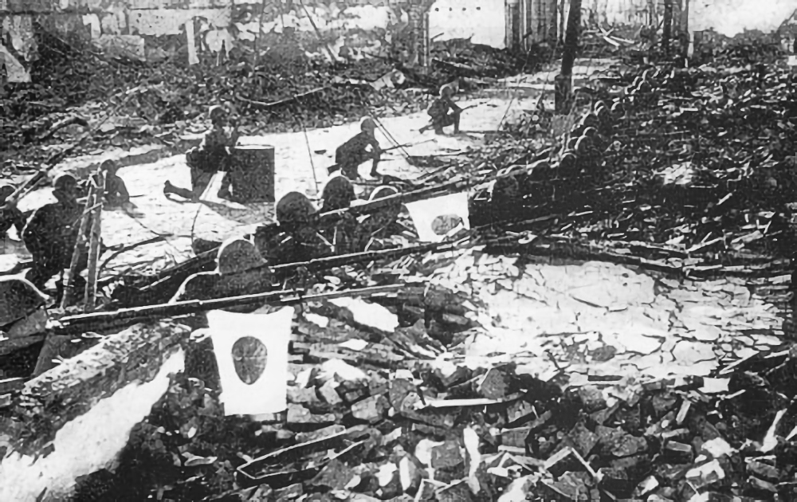

It is generally considered that in Europe World War II started on 1 September 1939,[2][3] beginning with the German invasion of Poland and the United Kingdom and France's declaration of war on Germany two days later. Other dates for the beginning of the war in the Pacific include the start of the Second Sino-Japanese War on 7 July 1937,[4][5] or the earlier Japanese invasion of Manchuria, on 19 September 1931.[6][7] Others follow the British historian A. J. P. Taylor, who held that the Sino-Japanese War and war in Europe and its colonies occurred simultaneously, and the two wars became World War II in 1941.[8] Other starting dates sometimes used for World War II include the Italian invasion of Abyssinia on 3 October 1935.[9] The British historian Antony Beevor views the beginning of World War II as the Battles of Khalkhin Gol fought between Japan and the forces of Mongolia and the Soviet Union from May to September 1939.[10] Others view the Spanish Civil War as the start or prelude to World War II. The exact date of the war's end is also not universally agreed upon. It was generally accepted at the time that the war ended with the armistice of 14 August 1945 (V-J Day), rather than with the formal surrender of Japan on 2 September 1945, which officially ended the war in Asia. A peace treaty between Japan and the Allies was signed in 1951.[13] A 1990 treaty regarding Germany's future allowed the reunification of East and West Germany to take place and resolved most post-World War II issues.[14] No formal peace treaty between Japan and the Soviet Union was ever signed,[15] although the state of war between the two countries was terminated by the Soviet–Japanese Joint Declaration of 1956, which also restored full diplomatic relations between them.
In this topic
Start and end dates
Europe
World War I had radically altered the political European map, with the defeat of the Central Powers—including Austria-Hungary, Germany, Bulgaria, and the Ottoman Empire—and the 1917 Bolshevik seizure of power in Russia, which led to the founding of the Soviet Union. Meanwhile, the victorious Allies of World War I, such as France, Belgium, Italy, Romania, and Greece, gained territory, and new nation-states were created out of the collapse of Austria-Hungary and the Ottoman and Russian Empires.
To prevent a future world war, the League of Nations was created during the 1919 Paris Peace Conference. The organisation's primary goals were to prevent armed conflict through collective security, military and naval disarmament, and settling international disputes through peaceful negotiations and arbitration.[17]
Despite strong pacifist sentiment after World War I,[18] irredentist and revanchist nationalism emerged in several European states in the same period. These sentiments were especially marked in Germany because of the significant territorial, colonial, and financial losses imposed by the Treaty of Versailles. Under the treaty, Germany lost around 13 percent of its home territory and all its overseas possessions, while German annexation of other states was prohibited, reparations were imposed, and limits were placed on the size and capability of the country's armed forces.[19]
The German Empire was dissolved in the German Revolution of 1918–1919, and a democratic government, later known as the Weimar Republic, was created. The interwar period saw strife between supporters of the new republic and hardline opponents on both the right and left. Italy, as an Entente ally, had made some post-war territorial gains; however, Italian nationalists were angered that the promises made by the United Kingdom and France to secure Italian entrance into the war were not fulfilled in the peace settlement. From 1922 to 1925, the Fascist movement led by Benito Mussolini seized power in Italy with a nationalist, totalitarian, and class collaborationist agenda that abolished representative democracy, repressed socialist, left-wing and liberal forces, and pursued an aggressive expansionist foreign policy aimed at making Italy a world power, and promising the creation of a "New Roman Empire".
Asia
The Kuomintang (KMT) party in China launched a unification campaign against regional warlords and nominally unified China in the mid-1920s, but was soon embroiled in a civil war against its former Chinese Communist Party allies[27] and new regional warlords. In 1931, an increasingly militaristic Empire of Japan, which had long sought influence in China[28] as the first step of what its government saw as the country's right to rule Asia, staged the Mukden Incident as a pretext to invade Manchuria and establish the puppet state of Manchukuo.
China appealed to the League of Nations to stop the Japanese invasion of Manchuria. Japan withdrew from the League of Nations after being condemned for its incursion into Manchuria. The two nations then fought several battles, in Shanghai, Rehe and Hebei, until the Tanggu Truce was signed in 1933. Thereafter, Chinese volunteer forces continued the resistance to Japanese aggression in Manchuria, and Chahar and Suiyuan.[30] After the 1936 Xi'an Incident, the Kuomintang and communist forces agreed on a ceasefire to present a united front to oppose Japan.
Course of the war
On 1 September 1939, Germany invaded Poland after having staged several false flag border incidents as a pretext to initiate the invasion.[66] The first German attack of the war came against the Polish defenses at Westerplatte.[67] The United Kingdom responded with an ultimatum to Germany to cease military operations, and on 3 September, after the ultimatum was ignored, Britain and France declared war on Germany,[68] followed by Australia, New Zealand, South Africa and Canada. During the Phoney War period, the alliance provided no direct military support to Poland, outside of a cautious French probe into the Saarland.[69] The Western Allies also began a naval blockade of Germany, which aimed to damage the country's economy and the war effort.[70] Germany responded by ordering U-boat warfare against Allied merchant and warships, which would later escalate into the Battle of the Atlantic.
On 8 September, German troops reached the suburbs of Warsaw. The Polish counter offensive to the west halted the German advance for several days, but it was outflanked and encircled by the Wehrmacht. Remnants of the Polish army broke through to besieged Warsaw. On 17 September 1939, two days after signing a cease-fire with Japan, the Soviet Union invaded Poland[72] under the pretext that the Polish state had ostensibly ceased to exist.[73] On 27 September, the Warsaw garrison surrendered to the Germans, and the last large operational unit of the Polish Army surrendered on 6 October. Despite the military defeat, Poland never surrendered; instead, it formed the Polish government-in-exile and a clandestine state apparatus remained in occupied Poland.[74] A significant part of Polish military personnel evacuated to Romania and Latvia; many of them later fought against the Axis in other theatres of the war.
Germany annexed the western and occupied the central part of Poland, and the Soviet Union annexed its eastern part; small shares of Polish territory were transferred to Lithuania and Slovakia. On 6 October, Hitler made a public peace overture to the United Kingdom and France but said that the future of Poland was to be determined exclusively by Germany and the Soviet Union. The proposal was rejected,[65] and Hitler ordered an immediate offensive against France,[76] which was postponed until the spring of 1940 due to bad weather.
Occupation
In Europe, occupation came under two forms. In Western, Northern, and Central Europe (France, Norway, Denmark, the Low Countries, and the annexed portions of Czechoslovakia) Germany established economic policies through which it collected roughly 69.5 billion reichsmarks (27.8 billion US dollars) by the end of the war; this figure does not include the sizeable plunder of industrial products, military equipment, raw materials and other goods.[404] Thus, the income from occupied nations was over 40 percent of the income Germany collected from taxation, a figure which increased to nearly 40 percent of total German income as the war went on.
In the East, the intended gains of Lebensraum were never attained as fluctuating front-lines and Soviet scorched earth policies denied resources to the German invaders.[406] Unlike in the West, the Nazi racial policy encouraged extreme brutality against what it considered to be the "inferior people" of Slavic descent; most German advances were thus followed by mass executions.[407] Although resistance groups formed in most occupied territories, they did not significantly hamper German operations in either the East[408] or the West[409] until late 1943.